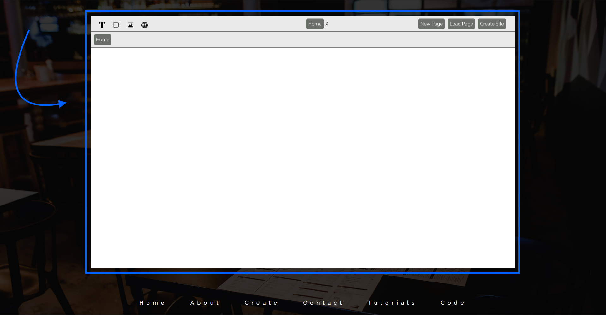
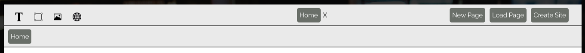
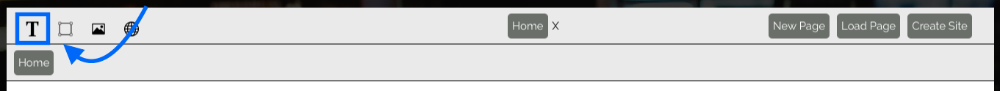
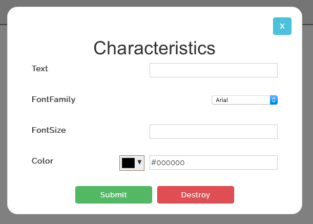
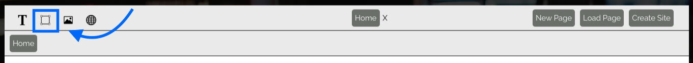
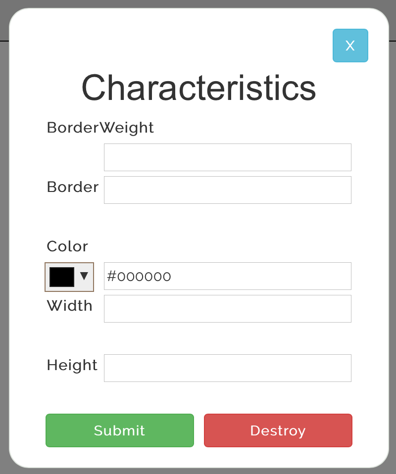
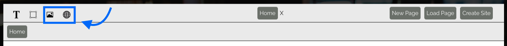
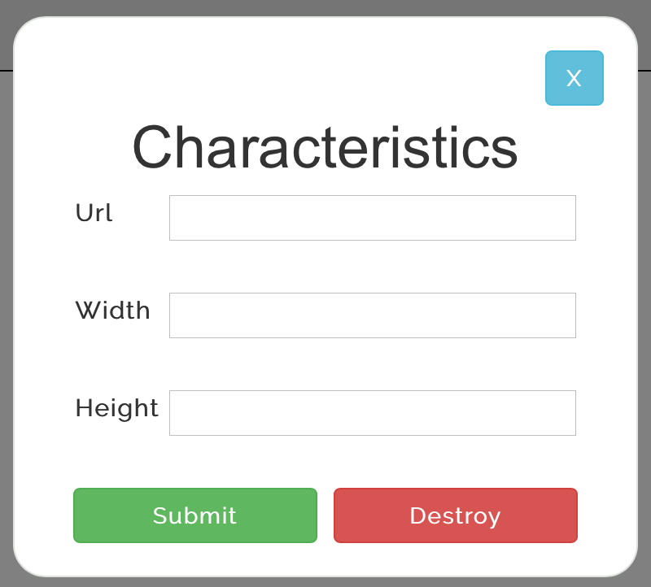

Here, you will find helpful guides and insights of how to best navigate the different options of the Sketch Query Application. If the help you are lookign for is not here, please reach out to us at the Contact page and we will be happy to assist you even further!
To first get started with Sketch Query, head over the the Create page. You will be greeted with an open canvas in which you can get started in right away!

On the Menu bar there are multiple different options you can choose from. Each one will let you use different tools to be able to create your website from.

The Text tool allows you to add text anywhere you want on the canvas, you can choose the color, font type, and size of the font to be placed - and then can drag and drop it anywhere you see fit.


The Rectangle tool allows you to be able to create grouping mechanisms by creating a rectangle or square which can contain other elements you wish to put on your page.


The Image tool allows you to add a web or local file to your page and move it around. This can be an image you found off the itnernet or one that is on your computer.

